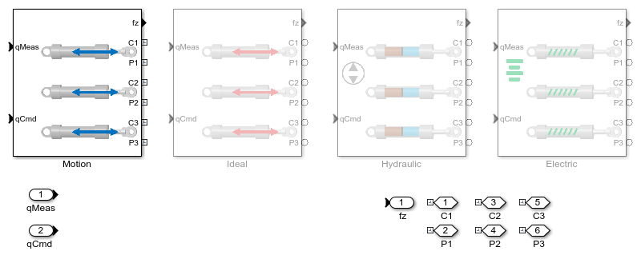
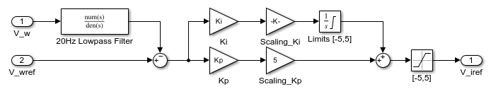
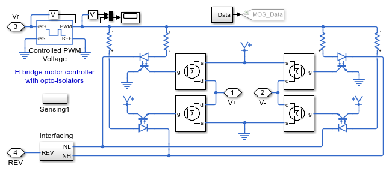
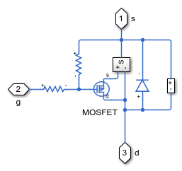
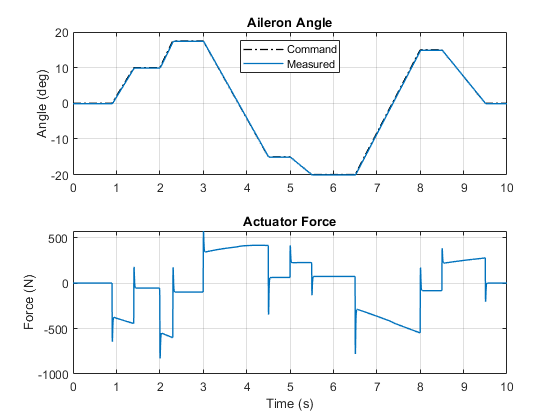

Aileron Actuation System, Electric Variant
This example models an actuation system for an aileron. The mechanical model was imported from CAD. Different variants model hydraulic and electric actuation systems so that their performance can be compared at the system level.
The electric variant is described here, and the hydraulic variant is described here.
Contents
Model

Mechanical Subsystem
The mechanical model of the aileron was created in a CAD system. That CAD model was imported into Simscape Multibody, including the joints.

Aileron_Att_1 Subsystem
This subsystem shows the aileron and all of brackets that attach to the actuation system. All rigidly attached parts are treated as a single part during dynamic simulation, so the vast number of screws and bolts do not impact the run time of the simulation.
Actuator Subsystem
Different variants enable different tests to be run within the same system level model. The Motion variant prescribes the motion profile of the aileron and the simulation determines how much force is required to achieve that motion. The Ideal variant can be tuned to reflect the behavior of a specific design. The Hydraulic variant includes 3 double-acting hydraulic cylinders on a single hydraulic network. The Electric variant contains three leadscrews on a single electrical network.
Motion Actuation Subsystem
This subsystem calculates the force required for the aileron to follow a motion profile. The desired angle is converted to actuator extension using a polynomial calculated using the Curve Fitting Toolbox. Simscape Multibody performs an inverse dynamics simulation to determine the force required to produce this motion. Simulating with this variant helps determines the requirements for the actuation system.
Electric Actuation Subsystem
This subsystem models an actuation system for the aileron. Three electrically-driven leadscrews extend and contract to move the aileron to the desired angle. The leadscrews are all on the same electrical network. The implementation of the controller and fidelity of the drive circuit can be adjusted in the mask.

Speed Controller Subsystem, Simulink Variant
This subsystem models the speed controller for the leadscrew. This variant implements the controller using Simulink blocks. This enables rapid adjustment of contoller structure and gains.
Speed Controller Subsystem, Circuit Variant
This subsystem models the speed controller for the leadscrew. This variant implements the controller as an analog circuit. This enables the use of simulation to determine the effect of this implementation on system performance.

Motor Driver Subsystem, Circuit Variant
This subsystem models the motor driver using power electronics. This variant would be used to analyze the timing of the power electronic controller and the power dissipated by the power electronics.
 Simulation Results from Simscape Logging
The plot below shows the actuator force required to follow the desired trajectory.
The plots below compare the performance of the hydraulic and electric designs with the desired performance.